Referenzen
Zufriedene Kunden sind die beste Werbung.
Seit 2010 vertrauen Kunden aus dem Privat-, Gewerbe- und Industriebereich aus dem Großraum München auf unsere Service- und Leistungspalette — von der einfachen Reparatur bis zum Smart Home und von der Einzelinstallation bis zum elektrotechnischen Komplettservice.
Projekte nach Gewerken
Verteiler und Schaltanlagen


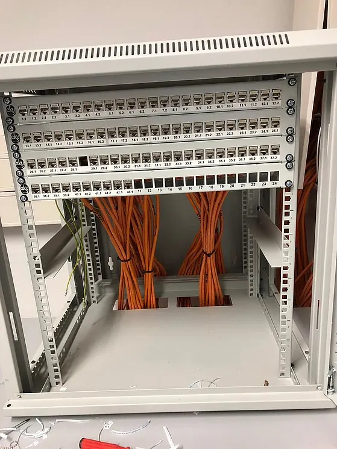


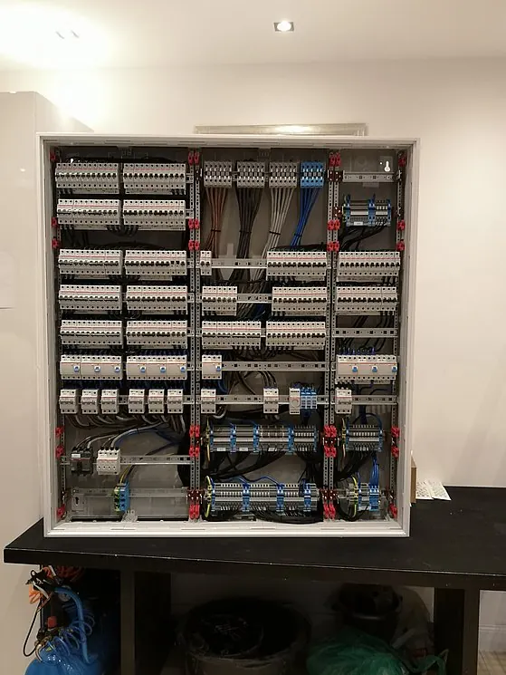
Netzwerk und EDV


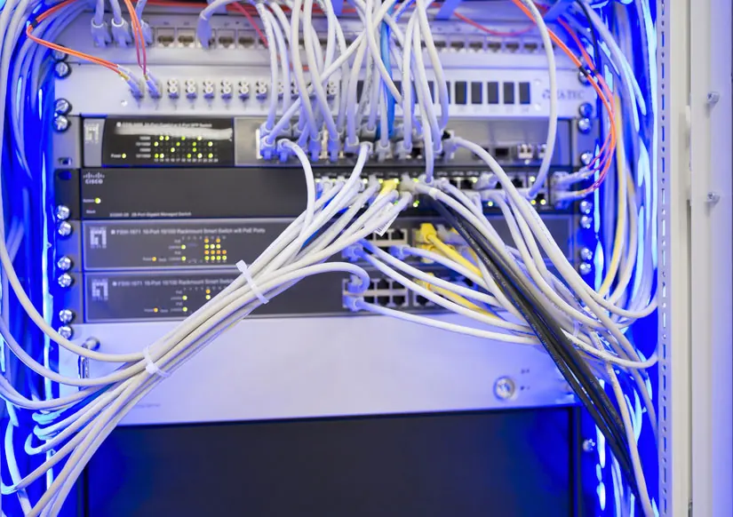

Beleuchtung

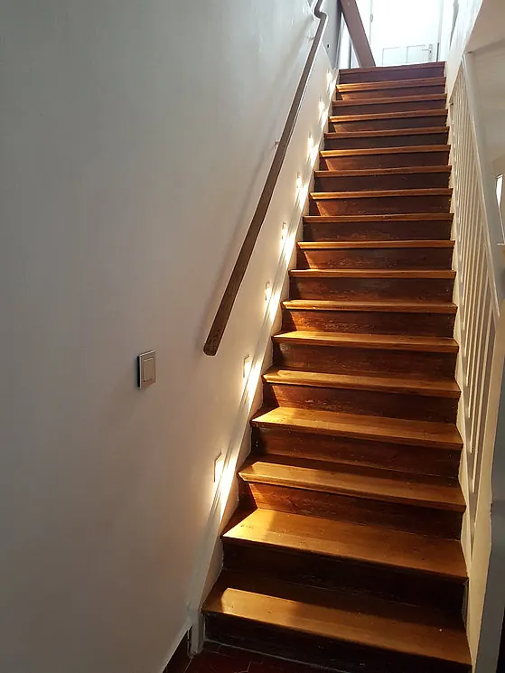
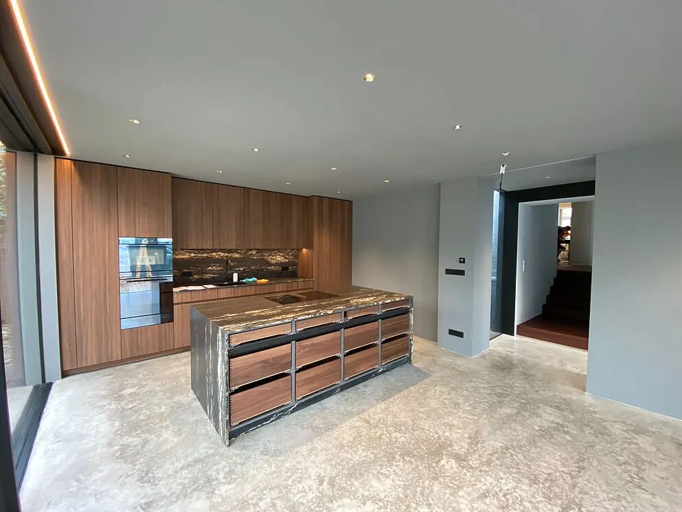
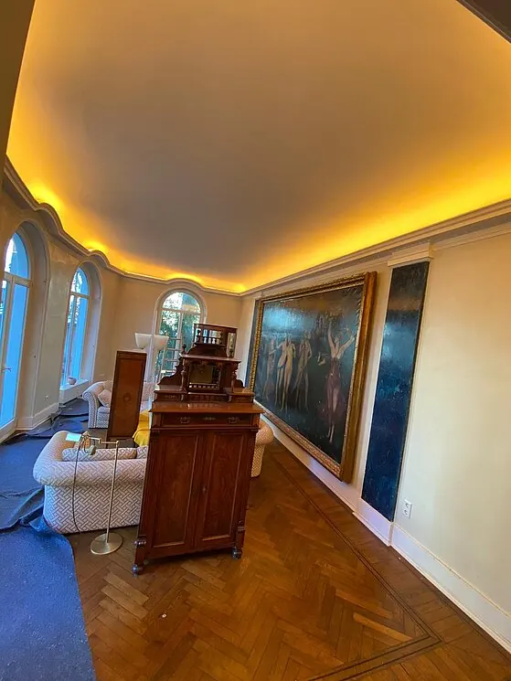

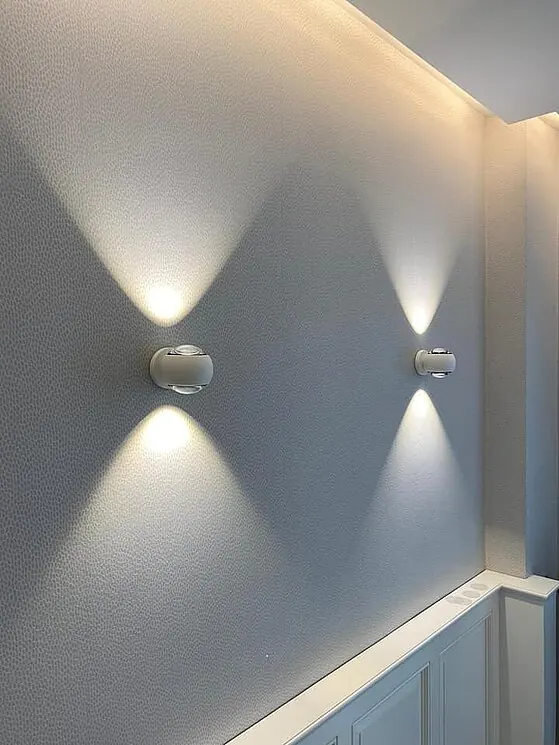
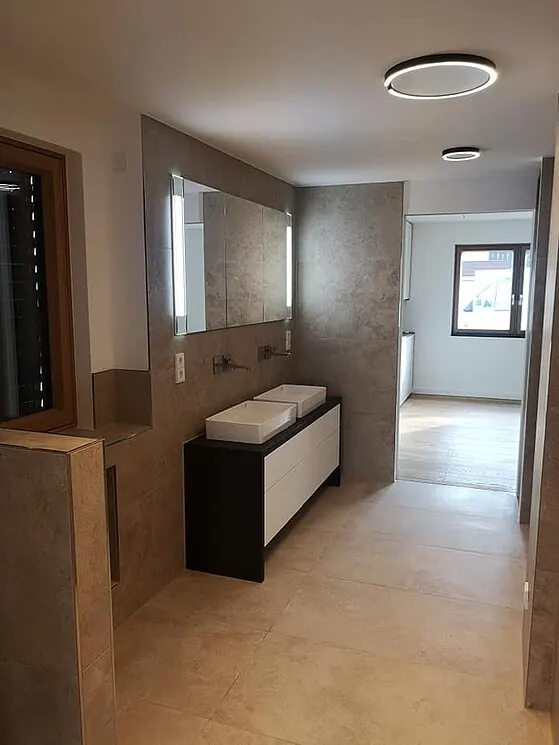
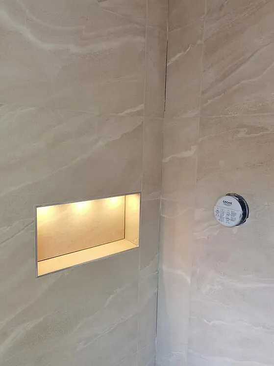
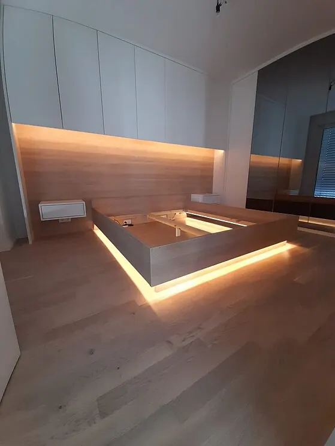
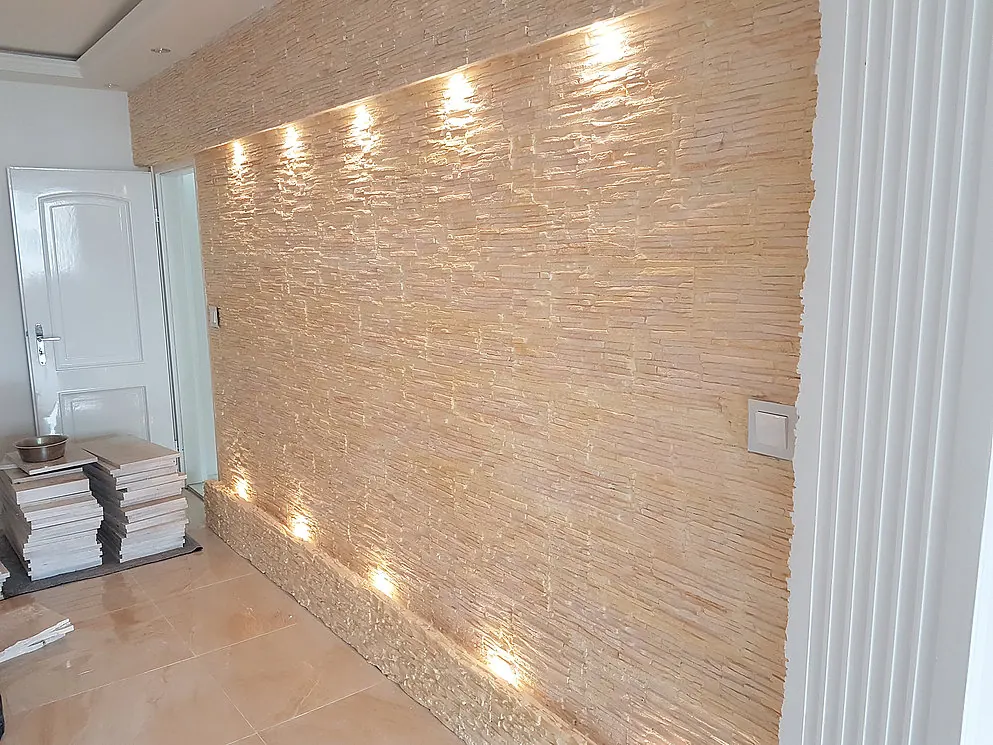
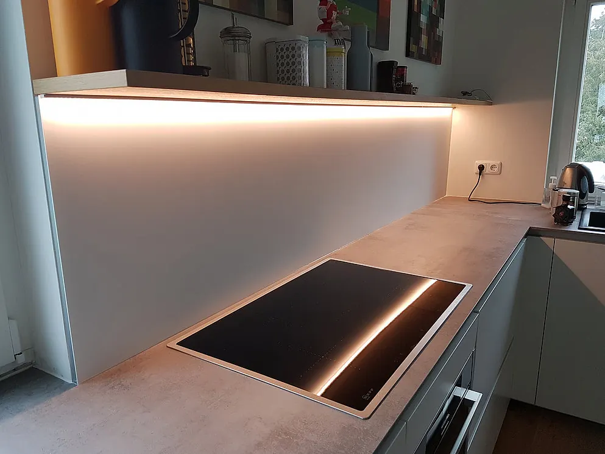
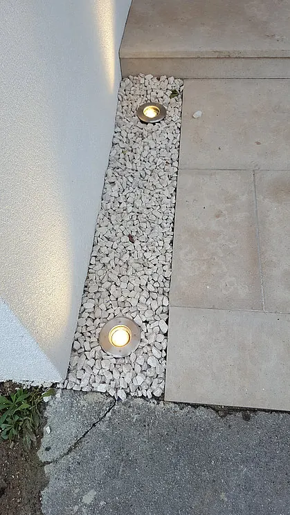
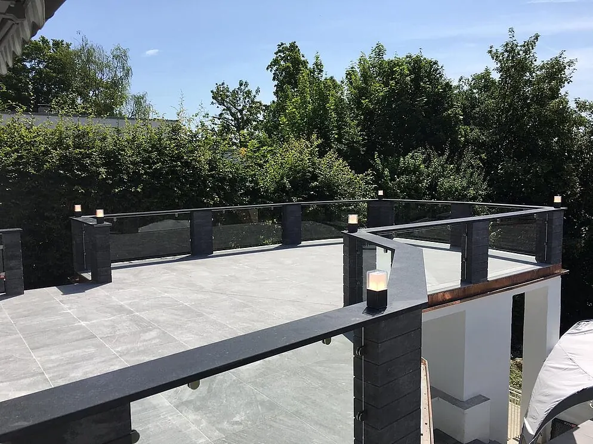
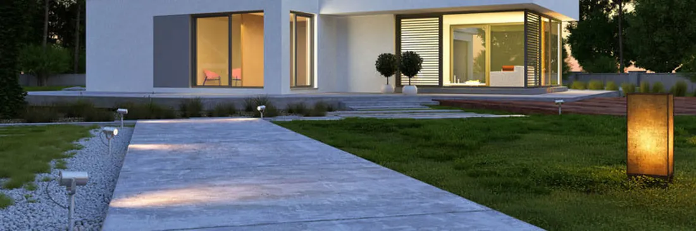
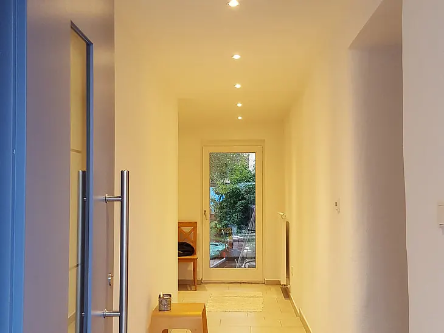
Sprechanlagen
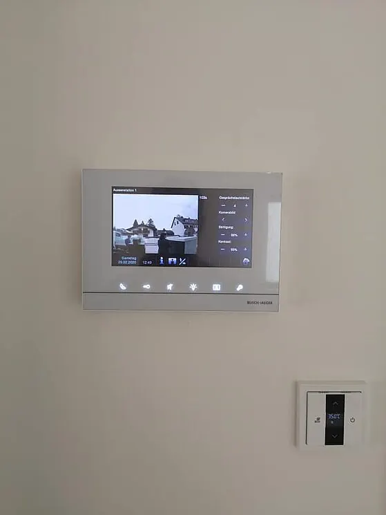
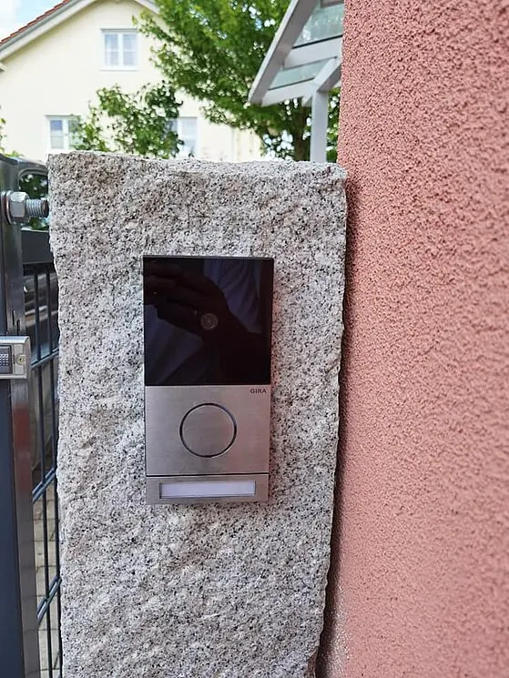
Photovoltaik

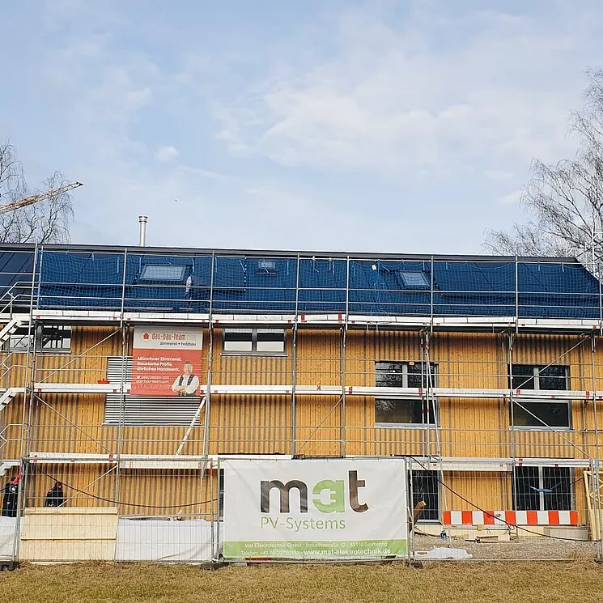

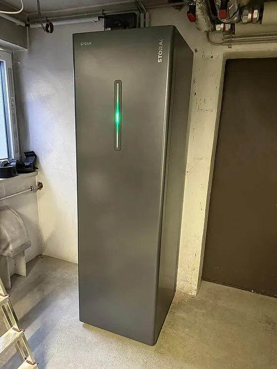
Dach, Blitzschutz und Baustelle


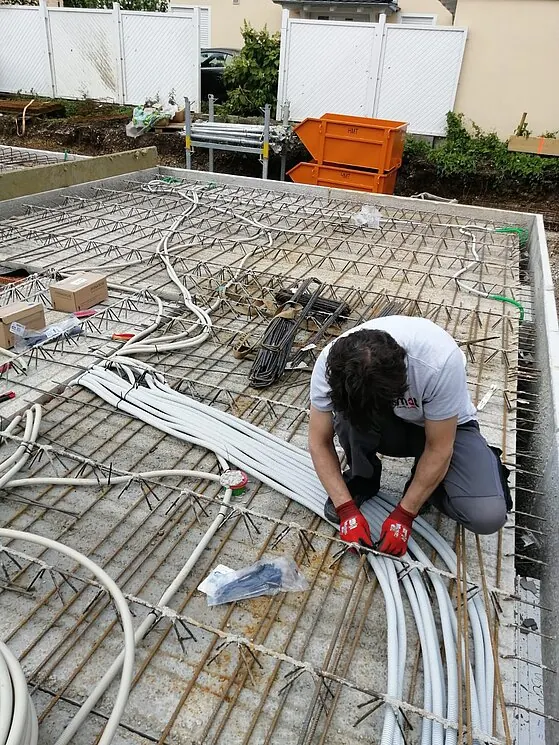
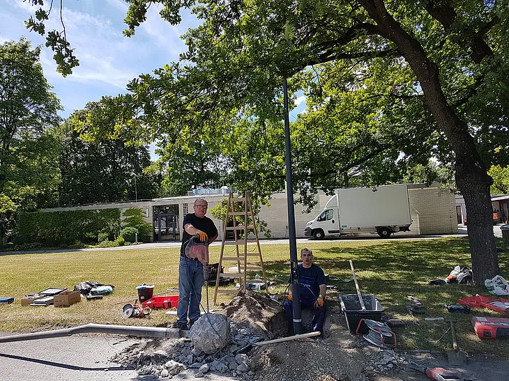
Ein Klick auf ein Bild öffnet es in voller Größe.
Kundenmeinungen
Was Kunden über uns sagen.
„Die Firma MAT-Elektrotechnik haben wir anhand der vorherigen guten Bewertungen und der Ortsnähe ausgewählt. Die Mitarbeiter sind sehr freundlich, super zuverlässig und vor allem kompetent. Alles wurde schnell und sauber installiert und das alles zu einem sehr fairen Preis."
„Wir haben eine über 50 Jahre alte Hauptverteilung im Keller auf den aktuellen Stand inkl. Aufbau einer Wallbox-Stromversorgung durchführen lassen. Vom ersten Vorgespräch, über die Planung und bis zur Ausführung der Arbeiten bin ich sehr zufrieden! Hier fühlt man sich rundum sorglos betreut."
„Wir haben komplett neu saniert und alles musste neu gemacht werden — auch die Elektrik. Super kompetente Beratung mit viel Engagement. Wir haben uns jederzeit gut betreut gefühlt und es war immer jemand erreichbar!"
„Sehr professionell, freundlicher Kontakt, alle Arbeiten zur vollsten Zufriedenheit ausgeführt — gerne wieder!"
„Sehr kompetent und absolut zuverlässig. Nettes Team und absolut empfehlenswert. Die Arbeit wurde immer sauber erledigt. Deshalb arbeiten wir schon viele Jahre zusammen."
„Schnelle unkomplizierte Projektierung, zeitnahe mängelfreie Ausführung — nur zu empfehlen!"
Die Zitate stammen von Kundinnen und Kunden der Mat-Elektrotechnik GmbH.
Kontakt
Sprechen wir darüber.
Ob eine defekte Steckdose, ein überfälliger Prüftermin oder eine Halle, die neu verkabelt werden muss — schildern Sie uns kurz Ihr Anliegen. Wir sagen Ihnen offen, ob wir der richtige Betrieb dafür sind.